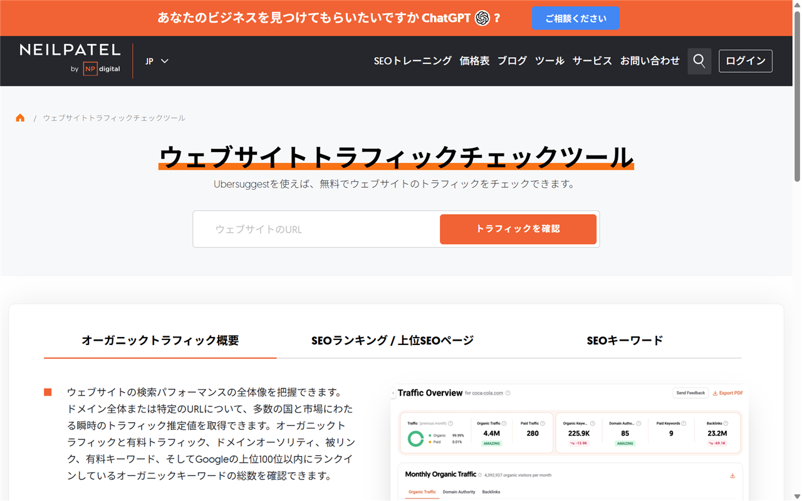

Similarwebの類似・代替ツールを比較｜無料枠・日本語対応と選び方
Similarwebは、第三者サイトの訪問数や流入元を推計する競合分析サービスです。代替候補は、競合全体、SEO、自社サイトのどれを調べたいかで変わります。
無料で使える範囲や日本語対応も踏まえ、継続・併用・乗り換えをどう選ぶかを整理します。
Similarwebと代替4ツールの違いを早見
第三者サイト全体のアクセス推計を優先するなら、Similarwebの継続が第一候補です。SEOでは3製品から選べ、自社サイトの実測にはGoogle Analyticsが向いています。
- Similarweb：競合全体を推計／無料版あり
- Semrush：SEOと市場分析／無料枠あり
- Ahrefs：検索と被リンク／無料ツールあり
- Ubersuggest：SEO調査／無料枠あり
- Google Analytics：自社実測／無料
無料版と個人向け有料プランで見られる範囲を比べられます。
代替選びはアクセス推計・SEO・自社実測を分ける
同じアクセス分析でも、競合サイトの推計と自社サイトの実測は別物です。まず必要なデータを決めると、候補を絞れます。
競合サイト全体の訪問数と流入元を見たい

競合サイトの訪問数だけでなく、流入チャネルや地域別の構成も見たいならSimilarwebが基準です。無料の公開結果ページでも、訪問数の推移や順位、流入元などを確認できます。
Semrushにも、全経路の訪問数を扱うTraffic & Marketがあります。ただし、通常のSEO製品とは別です。無料ユーザーが見られるのはサンプルドメインだけで、実ドメインは分析できません。
自然検索キーワードと被リンクを調べたい
検索経由の集客を調べるなら、Semrush、Ahrefs、Ubersuggestが候補です。自然検索キーワード、推定検索トラフィック、被リンクを中心に調べられます。
自社サイトの数値を正確に追いたい
Google Analyticsは、自社サイトやアプリに計測タグを設置してデータを集めます。訪問者の行動や成果を自社の実測値で追うための製品です。
一方、計測タグを置けない競合サイトは調べられません。Similarwebとは、調査の対象もデータの集め方も違います。
Similarwebの類似・代替候補4ツール
4候補は得意分野が異なるため、Similarwebを丸ごと置き換えるものではありません。自分が必要とするデータに合わせて選びます。
Semrush｜SEO調査と市場トラフィックを分けて使う

Semrushの無料アカウントはカード不要です。Domain OverviewやKeyword Researchなどは、各ツールで1日10クエリまで使えます。任意ドメインの自然検索流入、キーワード、被リンクの調査をここから始められます。
競合サイトの全経路を見たい場合は、別製品のTraffic & Marketが必要です。SEO製品だけを契約しても、Similarwebと同じ範囲を分析できるわけではありません。
- 置き換えられる範囲：自然検索、キーワード、被リンク
- 無料入口：カード不要の恒久無料アカウント
- 日本語：公式サイトと料金ページに対応
- 注意点：市場トラフィック分析は別製品
SEO製品の各プランとTraffic & Marketの役割を分けて検討できます。
Ahrefs｜自然検索トラフィックと被リンクを深掘りする

所有権を確認した自社サイトには、Ahrefs Webmaster Toolsを無料で使えます。ウェブ解析に加え、サイト監査やサイトエクスプローラーも対象です。
競合サイトには、登録不要のWebsite Traffic Checkerがあります。任意サイトの検索トラフィック推定値を見られますが、総訪問数や全流入チャネルの推計ではありません。
- 置き換えられる範囲：自然検索と被リンクの調査
- 無料入口：自社向け無料版と公開チェッカー
- 日本語：公式サイトと料金ページに対応
- 注意点：無料トライアルは提供なし
無料ツールの対象と、有料プランで広がる分析範囲を見比べられます。
Ubersuggest｜日本語画面でSEO調査を始める

Ubersuggestには無料アカウントがあります。キーワード提案、週1回の順位追跡、サイト別のSEO対策を日本語画面で始められます。
無料のトラフィックチェッカーでは、自然検索と有料検索の推定値を表示します。上位ページ、キーワード、被リンクも一部確認できますが、見られるデータは限られています。
- 置き換えられる範囲：検索流入とSEO課題の調査
- 無料入口：無料アカウントと公開チェッカー
- 日本語：料金ページとアプリに対応
- 注意点：推定値であり自社の実測値ではない
無料枠に加え、日本向けの年払いと買い切り料金を見られます。
Google Analytics｜自社サイトの実測値を確認する
Google Analytics Standardは無料です。日本語UIと日本語ヘルプがあり、自社サイトやアプリに計測タグを設置して利用します。
- 置き換えられる範囲：自社サイトとアプリの計測
- 無料入口：Standardを無料で利用可能
- 日本語：UIとヘルプセンターに対応
- 注意点：競合サイトの推計には使えない
無料版の概要と、サイトに計測を導入する手順を確認できます。
無料で使える範囲と料金体系の違い
5製品とも無料で試せます。ただし、Similarwebの競合サイト推計をすべて無料で置き換えられる製品はありません。
競合ドメインを無料で調べられる範囲
- Similarweb：過去1〜3か月、上位5件を表示。国別の絞り込みなし
- Semrush：SEO系の各ツールを1日10クエリまで利用
- Ahrefs：任意サイトの検索トラフィック推定値を公開チェッカーで表示
- Ubersuggest：自然検索、有料検索、上位ページなどの一部を表示
Similarwebには、カード登録が必要な7日間の無料トライアルもあります。終了前に解約しない場合は、自動課金へ移ります。
自社サイトだけなら無料で実測できる
Google Analytics Standardは、自社サイトやアプリを無料で計測できます。Ahrefs Webmaster Toolsも、所有権を確認したサイトなら無料です。
有料版は月額だけでなく分析対象を見る
Similarwebの競合分析プランは、年払いの月額換算で$125、月払いで$199です。
SemrushのSEOプランは$139／月、年払いでは$117.33／月です。Ahrefsには無料トライアルがなく、有料プランごとに利用できる機能が異なります。
Ubersuggestには年払いと買い切りがあります。Google AnalyticsはStandardが無料で、Analytics 360は個別契約となります。
無料版と有料版で、表示件数や分析期間がどう変わるかを確認できます。
無料アカウント、年払い、買い切りの選択肢を同じページで確認できます。
日本語対応と日本からの支払いを比べる
5製品とも、日本語で使えるサイトや画面があります。ただし、日本語UI、日本語サポート、契約時の支払い条件は分けて確認します。
日本語UIが確認できる範囲
- Similarweb：設定画面で日本語へ切り替え可能
- Semrush：公式サイトと料金ページは日本語。製品UIの日本語対応は公式記載を確認できず
- Ahrefs：製品UIを日本語へ切り替え可能。公式サイトと料金ページも日本語
- Ubersuggest：料金ページとアプリを日本語表示
- Google Analytics：製品UIとヘルプセンターが日本語に対応
日本語ページがあっても、すべての問い合わせを日本語で受けられるとは限りません。社内で導入するなら、操作画面とサポートを分けて確認すると安心です。
日本語サポートはプランで変わる
Similarwebの法人向けプランには、日本語のトレーニングと専任サポートがあります。個人向けは英語のメールとチャットのみです。
Google Analyticsには日本語ヘルプセンターがあり、問い合わせ窓口は契約種別で変わります。
Semrushには日本語の問い合わせ案内ページと連絡窓口があります。Ahrefsにも日本語ヘルプセンターと問い合わせ窓口があり、Ubersuggestにもサポート窓口があります。ただし、3製品とも日本語での有人回答を保証する公式記載はありません。
カードと請求書は確認済みの範囲だけ示す
Similarwebの個人向けはクレジットカード払いです。法人向けはカードと請求書に対応しています。請求書払いを希望する場合は、個人向けとの違いに注意が必要です。
AhrefsはVisa、Mastercard、American Express、UnionPayに対応しています。契約後はPDF請求書をダウンロード可能です。Enterpriseでは、請求書払いと電信送金を選べます。
UbersuggestはJCBを含む主要カード、デビットカード、PayPalに対応しています。定期購入プランの会社宛て請求書は、サポートに依頼すると発行されます。
SemrushはVisa、Mastercard、Discover、American Expressに対応しています。条件を満たす年次契約では銀行送金を選べ、契約後はPDF請求書をダウンロードできます。法人で経費処理や税区分が問題になる場合は、税理士に確認してください。
Similarwebを継続・併用・乗り換える判断
第三者サイト全体の推計が必要なら継続、SEOや自社実測を補いたいなら併用が合います。必要なデータが別製品で足りる場合は、乗り換えも選べます。
Similarwebを継続したほうがよい人
競合サイトの総トラフィック、流入チャネル、サイト順位を一つのサービスで追いたい人にはSimilarwebが合います。無料版では表示件数や期間が限られるため、継続判断では調べたいサイト数も考えます。
国別の絞り込みや市場単位の分析をする場合は、対応プランを選びます。検索流入だけでは事業判断に足りないなら、SEOツールへ乗り換えた後に失う情報がないかを確かめてください。
SEOツールやGoogle Analyticsを併用したほうがよい人
競合の全体像はSimilarweb、自然検索と被リンクはSEOツール、自社の成果はGoogle Analyticsと分担できます。一本にまとめるより、数値の役割が明確になります。
推計値と実測値は、同列に扱えません。競合の傾向と自社施策の評価で使う数値を分けると、差があっても判断に迷いにくくなります。
乗り換える前に同じドメインで並行確認する
各社の無料アカウントや公開チェッカー、Similarwebの無料トライアルを使って、同じドメインを複数製品で調べます。表示される指標と対象期間に加え、検索以外の流入を含むかどうかも比べます。
製品ごとにデータ源と指標の定義が違います。Similarwebの履歴データは単純に移せません。乗り換え後も追える指標を先に決めます。
解約前に契約更新日と返金条件を見る
Similarwebは管理画面またはサポートへのメールで解約できます。解約後も契約期間の終了までは利用でき、支払い済み料金は原則返金されません。
月次契約は更新の14日前、年次契約は30日前までの書面通知が条件です。候補製品の無料枠は、更新日まで余裕のある時期から試しましょう。
現行プランと無料版の範囲を見てから、継続と解約のどちらが合うか判断できます。
Similarwebの代替でよくある質問
AlexaもGoogle Analyticsも、現行のSimilarwebをそのまま置き換える製品ではありません。無料で使える候補の役割も、競合サイト推計、SEO調査、自社実測のどれを担うかで変わります。
無料で使える完全な代替ツールはある？
Similarwebの競合サイト推計を、無料で完全に置き換える製品はありません。競合全体ならSimilarwebの無料版、SEOなら各社の無料チェッカー、自社実測ならGoogle Analyticsという分け方が現実的です。
SimilarwebとGoogle Analyticsはどちらを選ぶ？
第三者サイトの訪問数や流入元を推計するならSimilarwebです。自社サイトにタグを設置し、訪問者の行動を実測するならGoogle Analyticsを選びます。
AlexaはSimilarwebの代替になる？
Amazon Alexa Internetはすでに終了しているため、現行の乗り換え候補にはなりません。過去のSimilarwebとの比較記事は、現在の契約判断には向きません。
Redditで挙がる代替候補は信用できる？
Redditの投稿は、価格、無料版の制限、小規模サイトの推計精度を知る参考になります。ただし、投稿者が調べたサイトや契約プランは同じとは限りません。
個別の意見を製品全体の事実に広げず、候補探しの材料に留めます。料金や無料枠は、公式情報と照らし合わせてください。
まとめ：必要なデータから代替候補を選ぶ
競合サイト全体を見るならSimilarweb、SEOならSemrush・Ahrefs・Ubersuggestが基本です。自社サイトの実測にはGoogle Analyticsを使います。目的が二つあるなら、無理に一本化せず併用する方法もあります。
- 競合全体：Similarweb
- SEO全般：Semrush
- 検索と被リンク：Ahrefs
- 無料・日本語を優先：Ubersuggest
- 自社サイトの実測：Google Analytics
無料版で見られる範囲を先に確認すると、代替候補との併用が必要か判断できます。